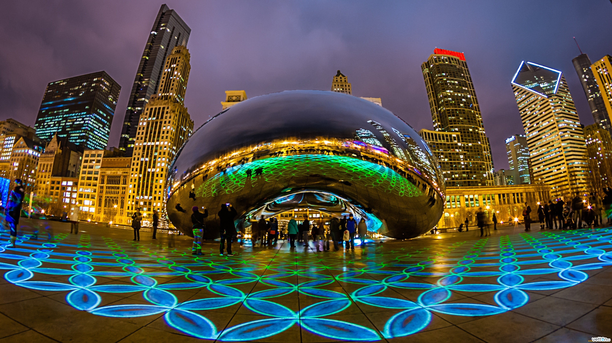

Меню
Чикаго

Чикаго (англ. Chicago) — третий по числу жителей (после Нью-Йорка и Лос-Анджелеса) город США, второй по значимости финансовый центр страны (после Нью-Йорка) и крупнейший транспортный узел Северной Америки. Расположен на юго-западном побережье озера Мичиган в штате Иллинойс; административный центр округа Кук.
Население Чикаго (по данным переписи 2012 года) составляет 2 714 856 человек (белое население — около 45 %). Агломерация Чикаго (с различными пригородами) называется «Большой Чикаго» или «Страна Чикаго» (англ. Chicagoland; название предложено газетой Chicago Tribune в начале XX века); в ней проживает около 9,5 млн человек. Агломерация Чикаго занимает 26-е место в мире по числу жителей.
Чикаго по праву считается экономической, промышленной, транспортной и культурной столицей Среднего Запада. Неофициально его иногда также называют «Второй Город» и «Город ветров». Впервые Чикаго был назван «Городом ветров» в статье в Chicago Tribune за 1858 год.
Copyright © 2014. Все права защищены.